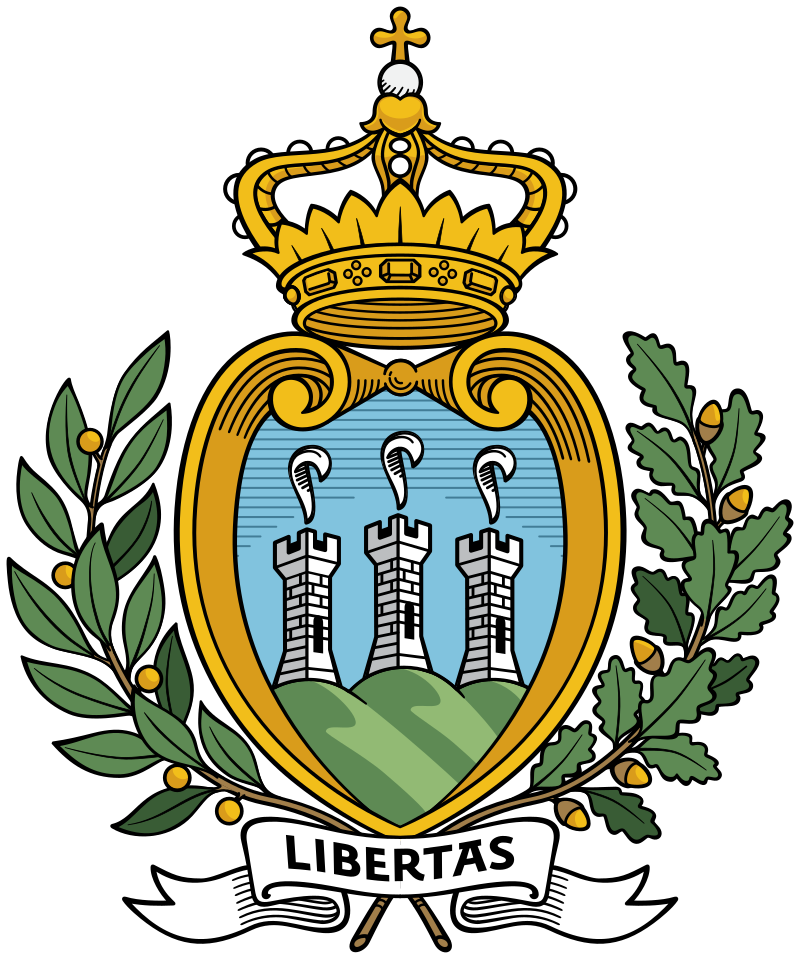
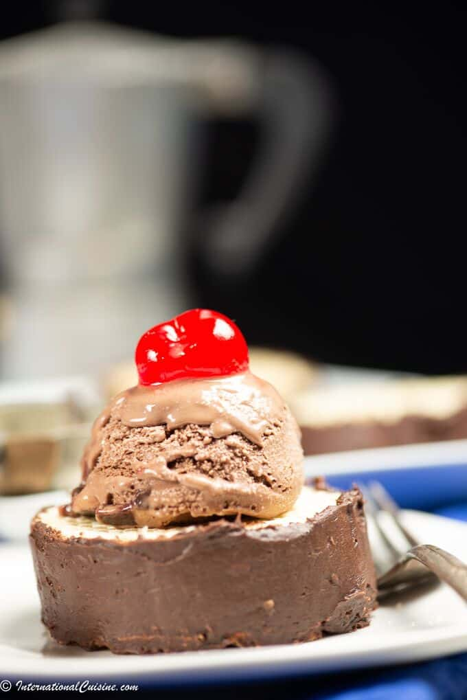

Torta Tre Monti


The national dessert of San Marino that represents the mountain peaks on that the tiny country is known for. This dessert involves wafers, chocolate, and cherries with dairy.
Ingredients
- Wafers: 1 package
- Nutella: 1 cup
- Whipped Cream: 2 cups
- Chocolate Icing: 1 cup
- Gelato: 1 pint
- Maraschino Cherries: 8
Steps
- Open the package of waffled wafers and set aside. Mix together the nutella and whipped cream until well combined.
- Spread the nutella cream over one waffled wafer and repeat with the other layers, leaving the top layer empty.
- Frost the sides of the wafers with chocolate icing.
- Serve the Torta Tre Monti with a scoop of gelato and a cherry on top.
Source: Torta Tre Monti (Waffled Wafers with Hazelnut Cream)